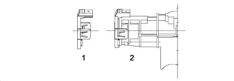
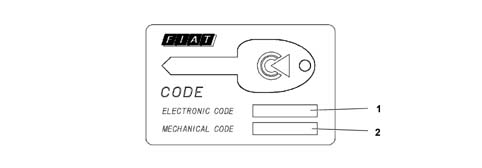
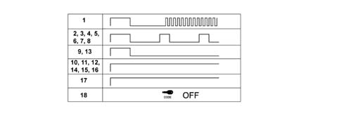
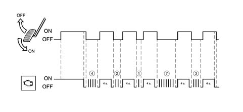

5580E anti-theft device
- Path
- Descriptions > 55 ELECTRICAL EQUIPMENT > 5580 SPECIAL ACCESSORIES > 5580E anti-theft device
- Kind
- system description
- Applies to
- all engines; all production periods
- Interactive page
- https://sloeber94.github.io/elrnDB-fPnd/en/#/2750974
Applies to: all engines; all production periods
The cars are equipped with an electronic system known as the FIAT CODE that acts as an engine immobiliser.
The FIAT CODE system allows the engine to start by means of the Engine NCM only after receiving a secret code memorised previously.
Applies to: all engines; all production periods
SYSTEM SPECIFICATIONS
The second generation Code system is built into the Facia Node (NPL).
Applies to: all engines; all production periods
The FIAT CODE system comprises 5 basic elements (in addition to the Facia Node which acts as control unit):
- B-Can or C-CAN line (according to the outfits) for communication between NPL and NCM
- bidirectional serial line for recovery ( W line)
- two to eight electronic keys containing a transponder with a secret code;
- an aerial which reads the code contained in the key transponders;
- the NCM for petrol and Diesel engines
Applies to: all engines; all production periods
GENERAL
The FIAT CODE allows engine control management to be commenced by the NCM by coded dialogue between the NBC and NCM during the pre-starting stage.
After the ignition is switched on, the NCM sends a request code to the NBC which responds only after recognizing (via the aerial) a known electronic key inserted in the ignition switch. If the secret code contained in the response is valid, the NCM continues with the usual engine control activity, allowing the engine to be started.
The NCM can memorise the secret code only by means of a particular procedure.
The FIAT CODE function is also guaranteed in the case of malfunction of the other NBL functions.
After recognising an enabled transponder, the FIAT CODE switches off any alarm system.
Applies to: all engines; all production periods
INTERACTION BETWEEN FIAT CODE AND KEY
Each key contains a transponder with the IDENTIFIER CODE and the SECRET CODE.
As soon as the ignition is switched on (+15), the transponder sends the identifier to the FIAT CODE which, recognising it as one of the enabled ones, proceeds with the strategy for recognising the SECRET CODE.
If the identifier is not recognised, the procedure aborts, preventing the engine from being started.
The cryptographic transponder is recognised by means of a challenge-response algorithm with exchange of encrypted code.
The code recognition time does not exceed 160 ms per attempt.
The FIAT CODE attempts for 1 second to acquire the transponder in any case.
Applies to: all engines; all production periods
METHOD OF USING C-CAN OR RECOVERY W LINE
Communication between the NPL and NCM takes place by default on the CAN line; if the CAN network is faulty, the recovery strategy is as follows:
- C-CAN network faulty
- the NCM passes on to recovery on the W serial line, requesting the code from the BCN: if the outcome is positive, starting is permitted
- if there are also problems on the W line, after re-transmission attempts, the ECN passes on to recovery from the accelerator pedal or the diagnostic instrument.
Applies to: all engines; all production periods
PROTECTION CODES
The FIAT CODE function is implemented via the exchange of secret codes between the various subsystems (keys, NPL, engine management unit).
UNIVERSAL CODE: this is the code which the LANCIA CODE, not yet programmed, sends to the NCM when it has recognised the presence of a transponder in the key.
The FIAT CODE warning light comes on at a frequency of 1.6 Hz and duty cycle of 50%.
The flashing of the light explains that the system is correctly connected and working, but the car is not protected by a code.
IMMO CODE: This is the basic code from which the secret code and fix code are obtained. An automatically generated immmo code is associated with each car. All the other secret codes used by the FIAT CODE function are generated from the immo code.
SECRET CODE: This is the code resident in the transponder. It is memorised in the transponders contained in the car keys at the time of programming the transponders, and in the FIAT CODE at the time of programming the keys at the end of the line.
FIX CODE: This is memorised in the FIAT CODE at the time of end-of-line programming.
ELECTRONIC CODE (PIN): This is obtained from the fix code and is stamped on the CODE CARD which is delivered to the car's owner; it is a 5-digit decimal code (0 is not permitted).
It is used to access, in a protected manner, the NPL memory in order to re-programme or programme new remote control keys and/or carry out particular diagnostic functions.
It is also used in the procedure of recovery from accelerator pedal described in the engine control unit specification.
IDENTIFIER: It is resident in the transponder and is different for each transponder. It is memorised in the FIAT CODE during the programming procedure. The FIAT CODE manages a table of enabled identifications and one for disabled identifications.
Applies to: all engines; all production periods
SPECIFCATIONS
The FIAT CODE is an NPL function
The main functions of the FIAT CODE are:
- to recognise the introduction and rotation of a key in the ignition switch (+15);
- to de-activate the alarm (if present) after recognition of an enabled key;
- to emit an electromagnetic field to read the key's transponder;
- to send the random code to the transponder;
- to receive the cryptographic code emitted by the key;
- to memorise up to 8 identifiers;
- to memorise the secret code;
- to manage a list of a maximum of 8 enabled identifiers;
- to manage a list of at least 16 permanently disabled identifiers;
- to manage the CAN line to the engine control unit;
- to manage the lighting up of the warning light on the panel by dialoguing with the NQS;
- to carry out self-diagnosis.
Applies to: all engines; all production periods
SPECIFICATIONS
Toroidal aerial
Ohm value= 40 Ohm
Applies to: all engines; all production periods
COMPOSITION
The aerial assembly consists of a toroidal reel aerial with built-in connector on the aerial body.
The connecting wiring to the NPL is integrated in the dashboard wiring loom.
Applies to: all engines; all production periods
OPERATION
The aerial is supplied by the NPL to energise the key's transponder.
As the aerial needs to be as close as possible to the transponder (for electromagnetic immunity, its small size and the limited range of the transponder), it is attached axially to the ignition switch.

1 - CODE aerial 2 - Ignition switch
Applies to: all engines; all production periods
SPECIFICATIONS
The mechanical key contains a cryptographic transponder in the handle.
Applies to: all engines; all production periods
OPERATING
When the key is inserted in the switch and the ignition is switched on (+15), the transponder is energized by the aerial and responds by emitting the secret code in a variable and encrypted way.
The emission into the air has sufficient power to have high immunity to electromagnetic interference and a range such that it is received by the aerial mounted in the ignition switch.
If the code is recognised as valid, the FIAT CODE sends the engine control unit, at the request of the latter, a coded signal that allows the engine to be started.
Up to 8 keys can be programmed in the FIAT CODE.
Applies to: all engines; all production periods
SPECIFICATIONS
The transponder contained in the key has the following coded in its memory:
- SECRET CODE, the same for each transponder in the same key kit;
- IDENTIFIER, different for each transponder produced;
- DATE OF PROGRAMMING the secret code
The identifier differs from transponder to transponder to ensure that, even if duplicates are requested on the Network, there are not several transponders with the same identifier.
Applies to: all engines; all production periods
Key programming
The storage procedure is divided into two stages in sequence:
- the key transponders are stored in the FIAT CODE;
- the FIAT CODE manages storage of the fix code in the engine management control unit
This second step is implemented automatically when the first is completed successfully at key on.
Applies to: all engines; all production periods
supply of key kits
Transponders are sent to the manufacturer programmed with an identifier (different for each transponder).
The key manufacturer generates an immo code, computes the codes (secret code, fix-code) and programmes the secret code and programming date into the key transponders.
Once they are programmed, it printes a bar code onto a disposable label that contains the immo code, the key identifiers, the programming date, the key mechanical code and, if present, the remote control/alarm codes.
The secret code in the kit keys is stored in the FIAT CODE during the end of line programming procedure. It is used in the cryptographic algorithm for key recognition.
Applies to: all engines; all production periods
Programming a new Facia Node
If the Facia Node is replaced, the FIAT CODE must be programmed with the secret code and the fix code of the car in which it is installed.
The database is accessed using the chassis number and the car immo code is obtained. The secret code and fix-code are obtained from this and programmed into the NPL.
In the case of a new NPL, the enabled and disabled identifier tables are empty.
Once the NPL has been installed in the car, a tester is used to store the key identifiers (see key programming).
Applies to: all engines; all production periods
Reprogramming the keys
Reprogramming the keys enables the keys authorised to start the car to be memorised in the NPL.
The new keys to be programmed and those already programmed will be inserted in the ignition switch to be recognised by the LANCIA CODE which will memorise in the table of enabled identifiers those presented during the procedure, and will transfer from the latter table to the table of disabled identifiers those identifiers which have not been presented.
Applies to: all engines; all production periods
Table of disabled keys
If an enabled key is no longer available (lost, stolen or no longer working), the subsequent key programming procedure (for example necessary for memorising the new replacement key) should disable its operation.
The FIAT CODE therefore manages a table in EEPROM which can contain the data relating to 16 disabled keys: the identifiers of the enabled keys not presented during the reprogramming procedures are transferred into this table.
If the disabled keys table is full, any new key will replace the first key entered on the table.
This table also permits traceability of the keys used on the car.
Applies to: all engines; all production periods
Key reprogramming prodecure
The minimum time for a KEY-ON during the storage procedure is 1 seconds.
The key reprogramming procedure is carried out/guided by the Diagnostic/Test Instrument: this procedure is activated by access protected by the car's PIN.
Once the procedure is activated, the flow is as follows:
- the diagnostic instrument instructs the NPL to initialize the key learning procedure.
- the operator enters the first key and requests learning from the NPL: the NPL reads the transponder after Key-on, verifies whether the secret code is correct and, if it is, learns the key's identifier.
- the operator repeats operation 2 for all the car's keys.
- once all the keys have been learnt, the diagnostic instrument instructs the NBC to memorise them permanently in EEPROM, in accordance with the following procedure:
- the NPL compares the learnt identifiers with those currently in memory
- the data of the keys memorised in EEPROM but not presented during learning, they are moved to the disabled keys table.
- the data of the learnt keys are memorised in the enabled keys table only if they are not already present in the disabled keys table.
Up to a maximum of 8 enabled keys can be programmed.
Applies to: all engines; all production periods
DELETION FROM MEMORY OF A LOST KEY
The procedure is the same as that described in the previous paragraph. All the keys owned must be presented; those not presented will be deleted, i.e. transferred into the table of disabled identifiers. A lost key may be deleted from memory at any time by a diagnostic/test instrument. The identifier of that key is transferred into the disabled keys table and will no longer be recognised.
Applies to: all engines; all production periods
COMPOSITION
This card contains the following:
- The emergency code (electronic code) which allows the car to be started with the EXAMINER or another diagnostic instrument or, in an emergency, with the accelerator pedal procedure. It is also used to programme the keys and remote controls with the EXAMINER.
- The mechanical code of the keys (mechanical code) identifies the mechanical profile of the key, and must be specified in the order to receive the key already cut.

1 - Electronic code 2 - Mechanical code
Applies to: all engines; all production periods
OPERATING
The 'electronic' emergency code is also used for diagnosis of the system and for other operations with the Examiner or another diagnostic instrument. Many of these operations (e.g. 'Programming Keys') can only be carried out after this code has been entered.
Therefore before any operation, the Customer must be asked for the Code Card.
Applies to: all engines; all production periods
SPECIFICATIONS
The code warning light is located on the instrument panel; it is controlled by a message on the B-CAN network by the NBC.
Applies to: all engines; all production periods
OPERATION
With the engine running, the diagnostic warning lights should never come on. Strategies are implemented to prevent the code warning light coming on falsely in the case of +15 at the NPL for t = 5s.
This warning light enters normal operating mode if a code is requested by the NCM.
When theNCM enters 'Prohibit Engine Management' mode, both warning lights display the event as follows:
EOBD and engine control fault warning light | CODE warning light | |
|---|---|---|
CAN line inactive | ON | ON |
Incorrect code received | ON | ON |
Incorrect communication between NPL and NCM | ON | ON |
Applies to: all engines; all production periods
Immobiliser system status and check on correct communication between NPL and NCM.
The following table shows 16 possible immobiliser system statuses based on static parameters. parameters are said to be static when their condition remains unchanged 500 ms after key-on.
Ref. | NPL | NCM | Trasponder | Can and W lines | Starting |
|---|---|---|---|---|---|
relay | V | V | OK | OK | permitted |
relay | V | V | KO | OK | not permitted |
3 | V | V | OK | KO | not permitted |
4 | V | V | KO | KO | not permitted |
5 | V | M | OK | OK | not permitted |
6 | V | M | KO | OK | not permitted |
7 | V | M | OK | KO | not permitted |
8 | V | M | KO | KO | not permitted |
9 | M | V | OK | OK | permitted |
10 | M | V | KO | OK | not permitted |
11. | M | V | OK | KO | not permitted |
12. | M | V | KO | KO | not permitted |
13 | M | M | OK | OK | permitted |
14 | M | M | KO | OK | not permitted |
15 | M | M | OK | KO | not permitted |
16 | M | M | KO | KO | not permitted |
In addition:
- Ref. 17 - The receptiont, by the BCN in VERIFY mode, of a delayed key code following a code request made after 500 ms by Key ON and which caused the code warning light to come on permanently, should cause the light to go out immediately, indicating that the system is connected correctly and working, and the car is protected.
- Ref. 18 - Particular blinking modes of the light are not required when the BCN is in the 'Diagnosis' state
where:
- V = blank
- M = stored
- trasponder OK = trasponder recognised
If these parameters change, the warning light/symbol will behave as follows:
- with reference to modes 3 and 4 in the table, when communication is restored, the code warning light/symbol begins to flash at a rate of 1.6 Hz d.c. 50% in mode 1 to indicate that the system is properly connected and operational.
- with reference to modes 7 and 8 in the table, when communication is restored, the code warning light/symbol begins to flash in mode 6 to indicate that the system is properly connected but that the engine management unit has not recognised the transponder.
In the case of CAN line OK and Line W faulty, the NBC causes the Code Warning light to flash three times as specified and then sends the previous blink code.
Applies to: all engines; all production periods
Method of operation and flashing times of CODE warning light
The NPL gives the instruction to the panel, via the CAN network, to switch on the FIAT CODE warning light as shown in the 'code warning light blink modes' table.
In accordance with the blink modes (from 1 to 18) identified in the top table, the code warning light should flash as shown in the following table.

Applies to: all engines; all production periods
FAULT DIAGNOSIS
The FIAT CODE function permits the possibility of carrying out self-diagnosis of the parts which make up the system.
The NPL can identify and memorise in EEPROM the presence of the following malfunctions:
Transponder:
- faulty or absent or with incorrect secret code
- deleted/disabled
- unknown/not memorised
Transponder aerial:
- faulty electrical connection (open circuit, short circuit to earth or to battery)
Applies to: all engines; all production periods
ACTIVE DIAGNOSIS
By means of commands sent from the Tester it is possible to:
Request current system status identified by:
- last key used and enabled and recognised
Control CODE warning light activation/deactivation on the NQS
Applies to: all engines; all production periods
RECOVERY PROCEDURE BY ACCELERATOR PEDAL
Whenever the customer wishes to start the engine and has problems with the FIAT CODE, the following procedure should be activated.
The recovery procedure is an emergency procedure and allows the user to regain possession of the car if the key has been lost or damaged. By 'manual' entry of a sub-code (EMERGENCY CODE).
The RECOVERY PROCEDURE can only be activated after the NCM has entered 'ENGINE IMMOBILIZED' status.
The RECOVERY PROCEDURE by accelerator pedal can be repeated a limitless number of times;
The RECOVERY PROCEDURE by accelerator pedal must be carried out fully (5 digits); there will be no message if one or more digits of the entered code are incorrect; the only way to check whether the code is correct is to complete the procedure and try to start the engine; the procedure can nevertheless be interrupted by KEY OFF.
If the accelerator pedal is released before a time-out (8 s the first time, 4 s the other times), the CHECK ENGINE warning light will not go out and the RECOVERY PROCEDURE will be aborted.
To start the recovery procedure, the user must carry out the following operations in order:
- Read the code on the CODE CARD.
- Turn the key to ON. The diagnosis warning light comes on for the self-test;
- Press and hold down the accelerator pedal. The diagnosis warning light goes out after 8 s.
- When the diagnosis light goes out, release the accelerator pedal.
- After the pedal has been released, the warning light will flash at a frequency of 0.8 Hz duty cycle 25% ON. When the warning light has come on a number of times equal to the first digit of the code, press and hold down the accelerator pedal to allow the ECN to recognise it. The diagnosis light will come on and stay on, fixed, for 4 s.
- When the diagnosis light goes out, release the accelerator pedal.
- After the pedal has been released, the warning light will flash at a frequency of 0.8 Hz duty cycle 25% ON. When the warning light has come on a number of times equal to the next digit in the code, press and hold down the accelerator pedal to allot the ECN to recognise it. The diagnosis light will come on and stay on, fixed, for 4 s.
- When the diagnosis light goes out, release the accelerator pedal.
- Repeat the operations described previously for the next digits up until the last.
- After the pedal has been released, when the last digit has been recognised, the warning light will flash at a frequency of 1.6 Hz duty cycle 25% for 4 s, or will go out sooner. If the code is rejected, it will come on in fixed mode. If the code is accepted, start the engine. If the code is refused, repeat the procedure.
The above diagram shows an example of entering a code (i.e. 42173).
